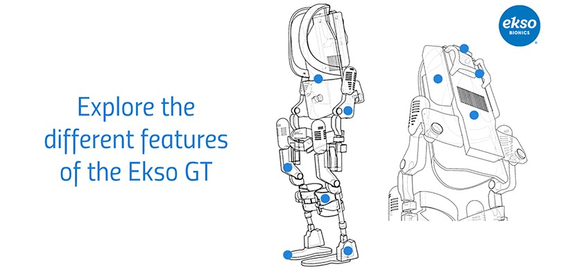
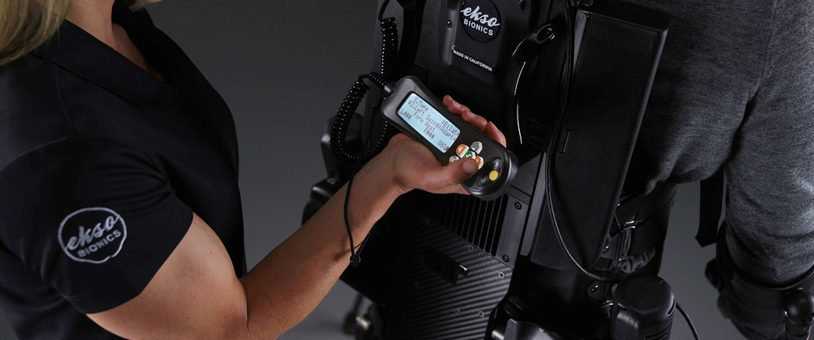

Because medical exoskeletons are extremely new in the field, they can be difficult to understand, and even frightening to use for the first time. During my internship with Ekso Bionics, the Vice President of Marketing challenged me to tackle this issue by creating a showcase of the form and functions of their flagship robot, the GT. The content would live on their website, and serve as an introduction to expose more potential users to the Ekso GT
After collaborating with both the engineering and marketing teams, my concept was a hierarchical view of the device from front and back, with the ability to interactively zoom in on key points. Using line art generated from CAD models, I was able to represent the device's form and capture its high level function with properly crafted wording. The first iteration of this content currently lives on the Ekso Bionics website, and can be viewed here!
As Ekso launches future product iterations, they seek to understand their users more deeply. During my internship, the product team was interested in examining two key areas: 1) the interactions that physical therapists have with the external controller during training and setup, and 2) the frequency and magnitude that certain features on the device are used in the field by specific groups.

From an ethnographic study of the clinical users, I evaluated the controller interface and made recomendations to improve usability during the setup phase. Brainstorming with the Vice President of Product, I wireframed more immersive ways to train new physical therapists on the GT's functions and correct usage.
Using Python, I wrote scripts to pull and analyze usage data from the Ekso GT's field sessions, filtering for a variety of parameters related to the device's capabilities and specifications. Cross referencing this data with knowledge of the device's functions, I concluded which features may be underutilized or co-linked during gait therapy, and provided a quantitative context to rationalize future product decisions.